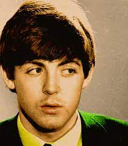

Paul McCartney
Paul McCartney a fost unul dintre membrii fondatori și principalii compozitori ai trupei The Beatles.
McCartney a avut o voce distinctă și abilități muzicale remarcabile, cântând și la chitară bas și la pian în formație.
Compozițiile sale în cadrul trupei The Beatles, precum "Yesterday" și "Hey Jude", au devenit hituri internaționale și au contribuit la succesul formației.
Talentul său muzical și abilitatea de a scrie melodii memorabile l-au făcut pe McCartney o forță creatoare vitală în evoluția The Beatles.
McCartney a adus o varietate de stiluri muzicale în repertoriul trupei, de la rock 'n' roll la balade romantice și experimente muzicale inovatoare.
Alături de John Lennon, a format o echipă de compozitori prolifici, contribuind semnificativ la catalogul impresionant al formației.
McCartney a fost, de asemenea, un interpret energic și carismatic pe scenă, aducând emoție și entuziasm în spectacolele live ale trupei.
Colaborarea strânsă cu Lennon a dat naștere unor piese celebre, cum ar fi "Let It Be" și "Eleanor Rigby".
McCartney a fost, de asemenea, un talentat multi-instrumentist, abordând diverse instrumente înregistrate în albumele The Beatles.
Carisma sa și capacitatea de a compune cântece captivante au făcut din Paul McCartney o figură iconică în muzica rock și unul dintre cei mai iubiți membri ai trupei The Beatles.